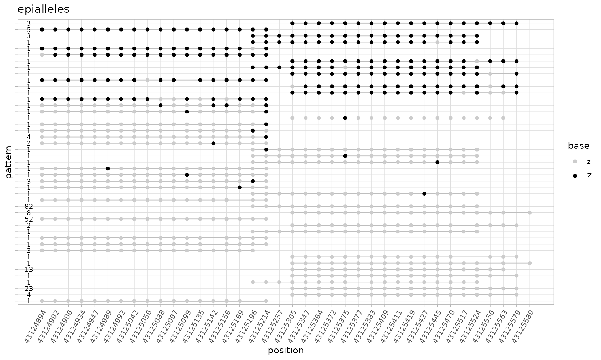
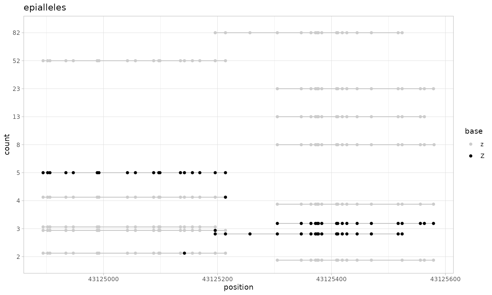

Abstract
A comprehensive guide to using the epialleleR package for calling the hypermethylated epiallele frequencies from next-generation sequencing data
The cytosine DNA methylation is an important epigenetic mechanism for regulation of gene expression. Abnormal methylation is linked to several diseases, being for example the most common molecular lesion in cancer cell1. Multiple studies suggest that alterations in DNA methylation, despite occurring at a low mosaic level, may confer increased risk of cancer later in life2.
The cytosine methylation levels within relatively small regions of the human genome are thought to be often concordant, resulting in a limited number of distinct methylation patterns of short sequencing reads3. Due to the cell-to-cell variations in methylation, DNA purified from tissue samples contains a mix of hyper- and hypomethylated alleles with varying ratios that depend on the genomic region and tissue type.
Unsurprisingly, when the frequencies of hypermethylated epialleles are low (e.g. 1e-02 and lower) and cytosine methylation levels are averaged and reported using conventional algorithms, the identification of such hypermethylated epialleles becomes nearly impossible. In order to increase the sensitivity of DNA methylation analysis we have developed epialleleR — an R package for calling hypermethylated variant epiallele frequencies (VEF).
epialleleR is a very fast and scalable solution for analysis of data obtained by next-generation sequencing of bisulfite-treated DNA samples. The minimum requirement for the input is a Binary Alignment Map (BAM) file containing sequencing reads. These reads can be obtained from either deep or ultra-deep sequencing, using either narrowly targeted gene panels (amplicon sequencing), larger methylation capture panels, or even whole-genome approaches.
epialleleR can call variant epiallele frequencies (VEF) of hypermethylated alleles at the level of individual cytosines (generateCytosineReport) or supplied genomic regions (generateBedReport)generateBedEcdf methodgenerateVcfReport
Currently epialleleR runs in a single-thread mode only. Loading the BAM data is now done by means of HTSlib, therefore it is possible to speed it up using >1 threads (nthreads option in preprocessBam). All operations are performed using optimised C++ functions, and usually take reasonable time. Running time for complete task “BAM on disk -> CX report on disk” depends on the size of the BAM file, and the speed is usually within the range of 20-30 MB/s (or 150-200 thousand reads per second) for a single core of a relatively modern CPU (Intel(R) Core(TM) i7-7700).
Major bottlenecks (in BAM loading and preprocessing) were removed in the release v1.2, full multithreading and minor improvements are expected in the future.
The epialleleR package includes sample data, which was obtained using targeted sequencing. The description of assays and files is given below. All the genomic coordinates for external data files are according to GRCh38 reference assembly.
The samples of Human HCT116 DKO Non-Methylated (Zymo Research, cat # D5014-1), or Human HCT116 DKO Methylated (Zymo Research, cat # D5014-2) DNA4, or their mix were bisulfite-converted, and the BRCA1 gene promoter region was amplified using four pairs of primers. Amplicons were mixed, indexed and sequenced at Illumina MiSeq system. The related files are:
| Name | Type | Description |
|---|---|---|
| amplicon000meth.bam | BAM | a subset of reads for non-methylated DNA sample |
| amplicon010meth.bam | BAM | a subset of reads for a 1:9 mix of methylated and non-methylated DNA samples |
| amplicon100meth.bam | BAM | a subset of reads for fully methylated DNA sample |
| amplicon.bed | BED | genomic coordinates of four amplicons covering promoter area of BRCA1 gene |
| amplicon.vcf.gz | VCF | a relevant subset of sequence variations |
| amplicon.vcf.gz.tbi | tabix | tabix file for the amplicon.vcf.gz |
The tumour DNA was bisulfite-converted, fragmented and hybridized with custom-made probes covering promoter regions of 283 tumour suppressor genes (as described in 5). Libraries were sequenced using Illumina MiSeq system. The related files are:
| Name | Type | Description |
|---|---|---|
| capture.bam | BAM | a subset of reads |
| capture.bed | BED | genomic coordinates of capture target regions |
| capture.vcf.gz | VCF | a relevant subset of sequence variations |
| capture.vcf.gz.tbi | tabix | tabix file for the capture.vcf.gz |
As mentioned earlier, epialleleR uses data stored in Binary Alignment Map (BAM) files as its input. It is a prerequisite that records in the BAM file are sorted by their name (and not a genomic location), contain an XG tag with a genomic strand they map to, and an XM tag with the methylation call string — such files are produced by virtually any software tool for mapping and alignment of bisulfite sequencing reads (such as Bismark, BSMAP or Illumina DRAGEN Bio-IT Platform).
Please use the function help files for a full description of available parameters, as well as explanation of the function’s logic and output values.
All epialleleR methods can load BAM data using the file path. However, if a file is very large and several reports need to be prepared, it is advised to use the preprocessBam convenience function as shown below. This function is also used internally when a BAM file location string is supplied as an input for other epialleleR methods.
preprocessBam currently accepts only BAM files that are derived from paired-end sequencing (create an issue if you need to process single-end BAM files). During preprocessing, paired reads are merged according to their base quality: nucleotide base with the highest value in the QUAL string is taken, unless its quality is less than min.baseq, which results in no information for that particular position (“-”/“N”). These merged reads are then processed as a single entity in all epialleleR methods. Due to merging, overlapping bases in read pairs are counted only once, and the base with the highest quality is taken.
library(epialleleR)
capture.bam <- system.file("extdata", "capture.bam", package="epialleleR")
bam.data <- preprocessBam(capture.bam)
#> Reading BAM file [0.027s]epialleleR can generate conventional cytosine reports in a format, which is similar to the genome-wide cytosine report produced by the coverage2cytosine Bismark module6.
Please note that generateCytosineReport produces thresholded (VEF) report by default: methylated cytosines from reads that do not pass the threshold (hypomethylated reads) are counted as being unmethylated. In order to make a conventional cytosine report, use threshold.reads=FALSE.
# data.table::data.table object for
# CpG VEF report
cg.vef.report <- generateCytosineReport(bam.data)
#> Already preprocessed BAM supplied as an input. Options 'min.mapq', 'min.baseq', 'skip.duplicates' and 'nthreads' will have no effect.
#> Thresholding reads [0.002s]
#> Preparing cytosine report [0.036s]
head(cg.vef.report[order(meth+unmeth, decreasing=TRUE)])
#> rname strand pos context meth unmeth
#> 1: chr17 + 61864475 CG 7 9
#> 2: chr17 + 61864486 CG 10 6
#> 3: chr17 + 61864504 CG 9 7
#> 4: chr20 - 57267455 CG 13 1
#> 5: chr17 - 61863826 CG 0 13
#> 6: chr17 - 61863830 CG 0 13
# CpG cytosine report
cg.report <- generateCytosineReport(bam.data, threshold.reads=FALSE)
#> Already preprocessed BAM supplied as an input. Options 'min.mapq', 'min.baseq', 'skip.duplicates' and 'nthreads' will have no effect.
#> Preparing cytosine report [0.029s]
head(cg.report[order(meth+unmeth, decreasing=TRUE)])
#> rname strand pos context meth unmeth
#> 1: chr17 + 61864475 CG 8 8
#> 2: chr17 + 61864486 CG 10 6
#> 3: chr17 + 61864504 CG 10 6
#> 4: chr20 - 57267455 CG 13 1
#> 5: chr17 - 61863826 CG 0 13
#> 6: chr17 - 61863830 CG 0 13
# CX cytosine report
cx.report <- generateCytosineReport(bam.data, threshold.reads=FALSE,
report.context="CX")
#> Already preprocessed BAM supplied as an input. Options 'min.mapq', 'min.baseq', 'skip.duplicates' and 'nthreads' will have no effect.
#> Preparing cytosine report [0.042s]
head(cx.report[order(meth+unmeth, decreasing=TRUE)])
#> rname strand pos context meth unmeth
#> 1: chr17 + 61864338 CHG 1 25
#> 2: chr17 + 61864348 CHH 0 24
#> 3: chr17 + 61864364 CHH 0 24
#> 4: chr17 + 61864365 CHH 0 24
#> 5: chr17 + 61864373 CHH 0 24
#> 6: chr17 + 61864324 CHG 0 23epialleleR allows to make reports not only for individual cytosine bases, but also for a set of genomic regions. It is especially useful when the targeted methylation sequencing was used to produce reads (such as amplicon sequencing or hybridization capture using, e.g., Agilent SureSelect Target Enrichment Probes).
The amplicon sequencing principally differs from capture-based assays in that the coordinates of reads are known. Therefore, reads can be assigned to amplicons by their exact positions, while to the capture targets — by the overlap. For this, epialleleR provides generic generateBedReport function as well as two of its aliases, generateAmpliconReport (for amplicon-based NGS) and generateCaptureReport (for capture-based NGS).
# report for amplicon-based data
# matching is done by exact start or end positions plus/minus tolerance
amplicon.report <- generateAmpliconReport(
bam=system.file("extdata", "amplicon010meth.bam", package="epialleleR"),
bed=system.file("extdata", "amplicon.bed", package="epialleleR")
)
#> Reading BED file [0.064s]
#> Reading BAM file [0.007s]
#> Thresholding reads [0.001s]
#> Preparing amplicon report [0.057s]
amplicon.report
#> seqnames start end width strand amplicon nreads+ nreads- VEF
#> 1: chr17 43125624 43126026 403 * CpG00-13 0 156 0.08333333
#> 2: chr17 43125270 43125640 371 * CpG14-31 0 61 0.11475410
#> 3: chr17 43125171 43125550 380 * CpG17-34 0 93 0.05376344
#> 4: chr17 43124861 43125249 389 * CpG33-49 0 84 0.10714286
#> 5: <NA> NA NA NA <NA> <NA> 60 46 0.13207547
# report for capture-based data
# matching is done by overlap
capture.report <- generateCaptureReport(
bam=system.file("extdata", "capture.bam", package="epialleleR"),
bed=system.file("extdata", "capture.bed", package="epialleleR")
)
#> Reading BED file [0.043s]
#> Reading BAM file [0.024s]
#> Thresholding reads [0.001s]
#> Preparing capture report [0.026s]
head(capture.report)
#> seqnames start end width strand V4 nreads+ nreads- VEF
#> 1: chr1 3067647 3069703 2057 * PRDM16 2 1 1.0000000
#> 2: chr1 3651039 3653096 2058 * TP73 0 2 0.5000000
#> 3: chr1 3689153 3691202 2050 * TP73 0 2 1.0000000
#> 4: chr1 3696519 3698570 2052 * TP73 1 2 1.0000000
#> 5: chr1 6179609 6181670 2062 * CHD5 0 3 0.6666667
#> 6: chr1 13698869 13699064 196 * PRDM2 NA NA NA
# generateBedReport is a generic function for BED-guided reports
bed.report <- generateBedReport(
bam=system.file("extdata", "capture.bam", package="epialleleR"),
bed=system.file("extdata", "capture.bed", package="epialleleR"),
bed.type="capture"
)
#> Reading BED file [0.017s]
#> Reading BAM file [0.024s]
#> Thresholding reads [0.001s]
#> Preparing capture report [0.025s]
identical(capture.report, bed.report)
#> [1] TRUEAs stated in the introduction, human genomic DNA regions often show bimodal methylation patterns. epialleleR allows to visualize this information by plotting empirical cumulative distribution functions (eCDFs) for within- and out-of-context beta values.
The code below produces plots for the sequencing reads of control DNA samples. Note that within-the-context eCDF(0.5) values are very close to the expected 1-VEF values for the corresponding control DNA samples:
# First, let's visualise eCDFs for within- and out-of-context beta values
# for all four amplicons and unmatched reads. Note that within-the-context eCDF
# of 0.5 is very close to the expected 1-VEF value (0.1) for all amplicons
# produced from this 1:9 mix of methylated and non-methylated control DNA
# let's compute eCDF
amplicon.ecdfs <- generateBedEcdf(
bam=system.file("extdata", "amplicon010meth.bam", package="epialleleR"),
bed=system.file("extdata", "amplicon.bed", package="epialleleR"),
bed.rows=NULL
)
#> Reading BED file [0.015s]
#> Reading BAM file [0.007s]
#> Computing ECDFs for within- and out-of-context per-read beta values [0.018s]
# there are 5 items in amplicon.ecdfs, let's plot all of them
par(mfrow=c(1,length(amplicon.ecdfs)))
# cycle through items
for (x in 1:length(amplicon.ecdfs)) {
# four of them have names corresponding to genomic regions of amplicon.bed
# fifth - NA for all the reads that don't match to any of those regions
main <- if (is.na(names(amplicon.ecdfs[x]))) "unmatched"
else names(amplicon.ecdfs[x])
# plotting eCDF for within-the-context per-read beta values (in red)
plot(amplicon.ecdfs[[x]]$context, col="red", verticals=TRUE, do.points=FALSE,
xlim=c(0,1), xlab="per-read beta value", ylab="cumulative density",
main=main)
# adding eCDF for out-of-context per-read beta values (in blue)
plot(amplicon.ecdfs[[x]]$out.of.context, add=TRUE, col="blue",
verticals=TRUE, do.points=FALSE)
}
# Second, let's compare eCDFs for within-the-context beta values for only one
# amplicon but all three sequenced samples: pure non-methylated DNA, 1:9 mix of
# methylated and non-methylated DNA, and fully methylated DNA
# our files
bam.files <- c("amplicon000meth.bam", "amplicon010meth.bam",
"amplicon100meth.bam")
# let's plot all of them
par(mfrow=c(1,length(bam.files)))
# cycle through items
for (f in bam.files) {
# let's compute eCDF
amplicon.ecdfs <- generateBedEcdf(
bam=system.file("extdata", f, package="epialleleR"),
bed=system.file("extdata", "amplicon.bed", package="epialleleR"),
# only the second amplicon
bed.rows=2, verbose=FALSE
)
# plotting eCDF for within-the-context per-read beta values (in red)
plot(amplicon.ecdfs[[1]]$context, col="red", verticals=TRUE, do.points=FALSE,
xlim=c(0,1), xlab="per-read beta value", ylab="cumulative density",
main=f)
# adding eCDF for out-of-context per-read beta values (in blue)
plot(amplicon.ecdfs[[1]]$out.of.context, add=TRUE, col="blue",
verticals=TRUE, do.points=FALSE)
}
It is known that sequence variants can affect the methylation status of a DNA7. The generateVcfReport function calculates frequencies of single nucleotide variants (SNVs) within epialleles and tests for the association between SNV and epiallelic status using Fisher Exact test. Base counts and the test’s p-values are included in the returned value.
In addition to BAM file location string or preprocessed BAM object, the function requires a location string for the Variant Call Format (VCF) file or the VCF object that was obtained using VariantAnnotation::readVcf function. As VCF files can be extremely large, it is strongly advised to prefilter the VCF object by the relevant set of genomic regions, or specify such relevant set of regions as a bed parameter when vcf points to a VCF file location.
Please note, that the output report is currently limited to SNVs only. Also, the default (min.baseq=0) output of generateVcfReport is equivalent to the one of samtools mplieup -Q 0 ..., and therefore may result in false SNVs caused by misalignments. Remember to increase min.baseq (samtools mplieup -Q default value is 13) to obtain results of a higher quality.
# VCF report
vcf.report <- generateVcfReport(
bam=system.file("extdata", "amplicon010meth.bam", package="epialleleR"),
bed=system.file("extdata", "amplicon.bed", package="epialleleR"),
vcf=system.file("extdata", "amplicon.vcf.gz", package="epialleleR"),
# thresholds on alignment and base quality
min.mapq=30, min.baseq=13,
# when VCF seqlevels are different from BED and BAM it is possible
# to convert them internally
vcf.style="NCBI"
)
#> Reading BED file [0.015s]
#> Reading VCF file [1.016s]
#> Reading BAM file [0.032s]
#> Thresholding reads [0.001s]
#> Extracting base frequences [0.055s]
# NA values are shown for the C->T variants on the "+" and G->A on the "-"
# strands, because bisulfite conversion makes their counting impossible
head(vcf.report)
#> name seqnames range REF ALT M+Ref U+Ref M-Ref U-Ref M+Alt U+Alt M-Alt U-Alt SumRef
#> 1: rs546660277 chr17 43124874 A C 0 0 9 74 0 0 0 0 83
#> 2: rs574263814 chr17 43124891 G A 0 0 NA NA 0 0 NA NA 0
#> 3: rs8176076 chr17 43124935 G A 0 0 NA NA 0 0 NA NA 0
#> 4: rs535977743 chr17 43125016 C T NA NA 9 73 NA NA 0 0 82
#> 5: rs191784032 chr17 43125050 C A 0 0 9 73 0 0 0 1 82
#> 6: rs111956204 chr17 43125083 C A 0 0 9 74 0 0 0 0 83
#> SumAlt FEp+ FEp-
#> 1: 0 1 1
#> 2: 0 1 NA
#> 3: 0 1 NA
#> 4: 0 NA 1
#> 5: 1 1 1
#> 6: 0 1 1
# let's sort the report by increasing Fisher's exact test's p-values.
# the p-values are given separately for reads that map to the "+"
head(vcf.report[order(`FEp-`, na.last=TRUE)])
#> name seqnames range REF ALT M+Ref U+Ref M-Ref U-Ref M+Alt U+Alt M-Alt U-Alt SumRef
#> 1: rs546660277 chr17 43124874 A C 0 0 9 74 0 0 0 0 83
#> 2: rs535977743 chr17 43125016 C T NA NA 9 73 NA NA 0 0 82
#> 3: rs191784032 chr17 43125050 C A 0 0 9 73 0 0 0 1 82
#> 4: rs111956204 chr17 43125083 C A 0 0 9 74 0 0 0 0 83
#> 5: rs55680227 chr17 43125086 A C 0 0 8 64 0 0 0 0 72
#> 6: rs539733232 chr17 43125088 C A 0 0 8 71 0 0 0 0 79
#> SumAlt FEp+ FEp-
#> 1: 0 1 1
#> 2: 0 NA 1
#> 3: 1 1 1
#> 4: 0 1 1
#> 5: 0 1 1
#> 6: 0 1 1
# and to the "-" strand
head(vcf.report[order(`FEp+`, na.last=TRUE)])
#> name seqnames range REF ALT M+Ref U+Ref M-Ref U-Ref M+Alt U+Alt M-Alt U-Alt SumRef
#> 1: rs546660277 chr17 43124874 A C 0 0 9 74 0 0 0 0 83
#> 2: rs574263814 chr17 43124891 G A 0 0 NA NA 0 0 NA NA 0
#> 3: rs8176076 chr17 43124935 G A 0 0 NA NA 0 0 NA NA 0
#> 4: rs191784032 chr17 43125050 C A 0 0 9 73 0 0 0 1 82
#> 5: rs111956204 chr17 43125083 C A 0 0 9 74 0 0 0 0 83
#> 6: rs55680227 chr17 43125086 A C 0 0 8 64 0 0 0 0 72
#> SumAlt FEp+ FEp-
#> 1: 0 1 1
#> 2: 0 1 NA
#> 3: 0 1 NA
#> 4: 1 1 1
#> 5: 0 1 1
#> 6: 0 1 1epialleleR packageThe experimental data analysed using the package has not been published yet. The citation information will be updated in the nearest future.
sessionInfo()
#> R version 4.1.1 (2021-08-10)
#> Platform: x86_64-pc-linux-gnu (64-bit)
#> Running under: Ubuntu 20.04.3 LTS
#>
#> Matrix products: default
#> BLAS/LAPACK: /usr/lib/x86_64-linux-gnu/openblas-pthread/libopenblasp-r0.3.8.so
#>
#> locale:
#> [1] LC_CTYPE=en_US.UTF-8 LC_NUMERIC=C LC_TIME=en_US.UTF-8
#> [4] LC_COLLATE=en_US.UTF-8 LC_MONETARY=en_US.UTF-8 LC_MESSAGES=C
#> [7] LC_PAPER=en_US.UTF-8 LC_NAME=C LC_ADDRESS=C
#> [10] LC_TELEPHONE=C LC_MEASUREMENT=en_US.UTF-8 LC_IDENTIFICATION=C
#>
#> attached base packages:
#> [1] stats4 stats graphics grDevices utils datasets methods base
#>
#> other attached packages:
#> [1] GenomeInfoDb_1.29.8 IRanges_2.27.2 S4Vectors_0.31.5 BiocGenerics_0.39.2
#> [5] epialleleR_1.1.11
#>
#> loaded via a namespace (and not attached):
#> [1] bitops_1.0-7 matrixStats_0.61.0 fs_1.5.0
#> [4] bit64_4.0.5 filelock_1.0.2 progress_1.2.2
#> [7] httr_1.4.2 rprojroot_2.0.2 tools_4.1.1
#> [10] bslib_0.3.0 utf8_1.2.2 R6_2.5.1
#> [13] DBI_1.1.1 tidyselect_1.1.1 prettyunits_1.1.1
#> [16] bit_4.0.4 curl_4.3.2 compiler_4.1.1
#> [19] textshaping_0.3.5 Biobase_2.53.0 xml2_1.3.2
#> [22] desc_1.4.0 DelayedArray_0.19.4 rtracklayer_1.53.1
#> [25] sass_0.4.0 rappdirs_0.3.3 pkgdown_1.9000.9000.9000
#> [28] systemfonts_1.0.2 stringr_1.4.0 digest_0.6.28
#> [31] Rsamtools_2.9.1 rmarkdown_2.11 XVector_0.33.0
#> [34] pkgconfig_2.0.3 htmltools_0.5.2 MatrixGenerics_1.5.4
#> [37] highr_0.9 dbplyr_2.1.1 fastmap_1.1.0
#> [40] BSgenome_1.61.0 rlang_0.4.11 RSQLite_2.2.8
#> [43] jquerylib_0.1.4 BiocIO_1.3.0 generics_0.1.0
#> [46] jsonlite_1.7.2 BiocParallel_1.27.12 dplyr_1.0.7
#> [49] VariantAnnotation_1.39.0 RCurl_1.98-1.5 magrittr_2.0.1
#> [52] GenomeInfoDbData_1.2.7 Matrix_1.3-4 Rcpp_1.0.7
#> [55] fansi_0.5.0 lifecycle_1.0.1 stringi_1.7.4
#> [58] yaml_2.2.1 SummarizedExperiment_1.23.4 zlibbioc_1.39.0
#> [61] BiocFileCache_2.1.1 grid_4.1.1 blob_1.2.2
#> [64] parallel_4.1.1 crayon_1.4.1 lattice_0.20-45
#> [67] Biostrings_2.61.2 GenomicFeatures_1.45.2 hms_1.1.1
#> [70] KEGGREST_1.33.0 knitr_1.36 pillar_1.6.3
#> [73] GenomicRanges_1.45.0 rjson_0.2.20 biomaRt_2.49.4
#> [76] XML_3.99-0.8 glue_1.4.2 evaluate_0.14
#> [79] data.table_1.14.2 png_0.1-7 vctrs_0.3.8
#> [82] purrr_0.3.4 assertthat_0.2.1 cachem_1.0.6
#> [85] xfun_0.26 restfulr_0.0.13 ragg_1.1.3
#> [88] tibble_3.1.5 GenomicAlignments_1.29.0 AnnotationDbi_1.55.1
#> [91] memoise_2.0.0 ellipsis_0.3.2